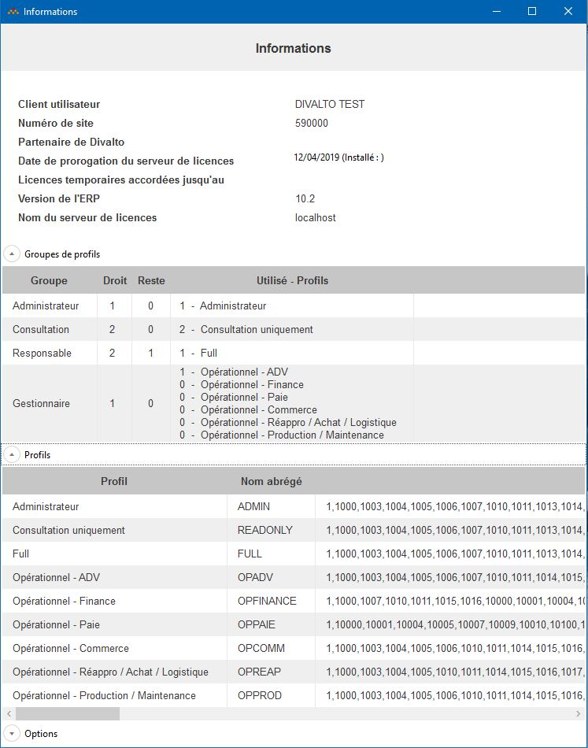
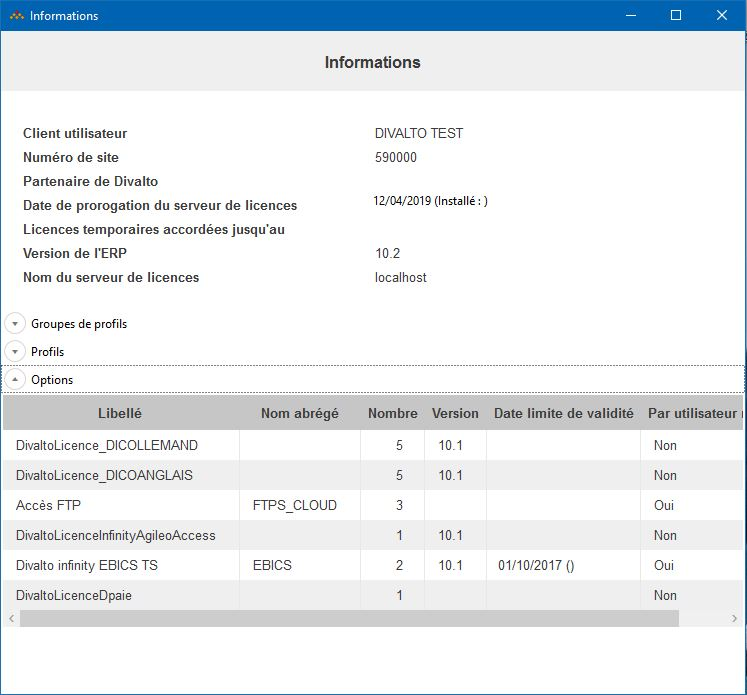

Accueil | DLMT - Gestion des licences nommées | Divalto Licences Management Tool (DLMT) | Informations
Le choix « Informations » du menu Général affiche les informations du serveur de licences :


La version de l’ERP est indiquée dans le cartouche d’en-tête.
Pour les options, la version est spécifiée sur chaque ligne de chaque option. Des options ont une date limite de validité. La date apparaît alors sur la ligne de l’option concernée.
Certaines options sont liées à un utilisateur nommé. Elles apparaissent alors dans le tableau de saisie des associations des utilisateurs aux options. Dans le tableau d’informations, la colonne « Par utilisateur » est positionnée à la valeur « Oui ».
Pour les groupes de profils, la colonne Reste le nombre de profils restants à affecter sur ce serveur de licences. La colonne Utilisé - Profils montre la répartition des profils effectivement affectés par groupe de profils.